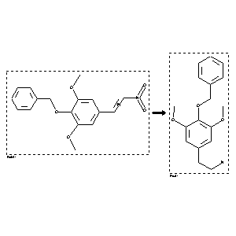

 |
| FA | RX(1); FLST(1); RX(2) |
Reaction (1 of 1)
| Reaction ID | 426047 |
| Reactant BRN | 3162777 |
| Reactant | trans-b-nitro-3.5-dimethoxy-4-benzyloxy-styrene |
| Product BRN | 2818853 |
| Product | 4-benzyloxy-3,5-dimethoxy-phenethylamine |
| No. of Reaction Details | 2 |
Reaction Details (1 of 1)
| Reaction Classification | Preparation |
| Reagent | acetic acid; ethanol; zinc |
| Other Conditions | Behandeln des Reaktionsprodukts mit Natrium-Amalgam und Essigsaeure enthaltendem Aethanol |
| Comment | Handbook |
| Citation Pointer | 2002564; Patent; CIBA; CH 150823; 1930; |
Reaction Details (2 of 1)
| Reaction Classification | Preparation |
| Yield | 66 percent (BRN=2818853) |
| Reagent | lithium aluminium hydride |
| Solvent | tetrahydrofuran |
| Time | 6 hour(s) |
| Other Conditions | Heating |
| Citation Pointer | 5628390; Journal; Battersby, Alan R.; Jones, Raymond C. F.; Kazlauskas, Rymantas; Thornber, Craig W.; Ruchirawat, Somsak; Staunton, James; JCPRB4; J.Chem.Soc.Perkin Trans.1; EN; 1981; 2016-2029; |
Reference (1 of 2)
| Citation Number | 2002564 |
| Document Type | Patent |
| Patent Author | CIBA |
| Patent Number | CH 150823 |
| Patent Year | 1930 |
Reference (2 of 2)
| Citation Number | 5628390 |
| Document Type | Journal |
| Authors | Battersby, Alan R.; Jones, Raymond C. F.; Kazlauskas, Rymantas; Thornber, Craig W.; Ruchirawat, Somsak; Staunton, James |
| CODEN | JCPRB4 |
| Journal Title | J.Chem.Soc.Perkin Trans.1 |
| Language Code | EN |
| Publication Year | 1981 |
| Page | 2016-2029 |